Quando il campo è strutturalmente solido, la forma può cambiare pur conservando la propria identità. Espandersi, piegarsi, articolarsi non significa perdere coerenza, ma esprimere la flessibilità interna del sistema. Le architetture selezionate mostrano come l’invarianza compositiva possa sopravvivere alla trasformazione formale.
A.
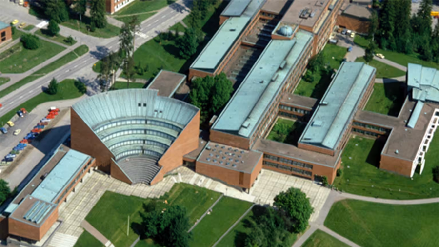
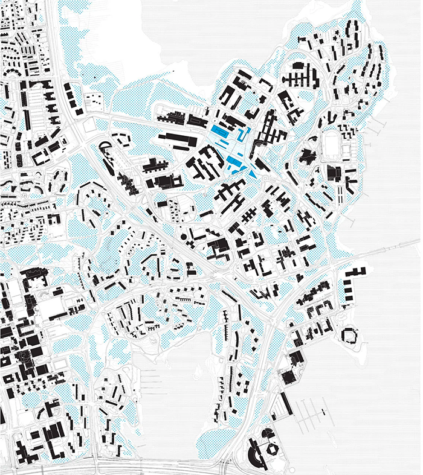
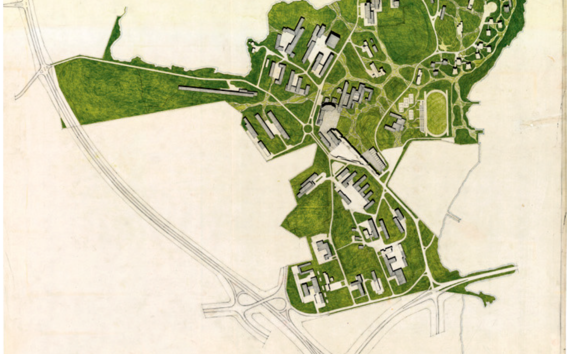
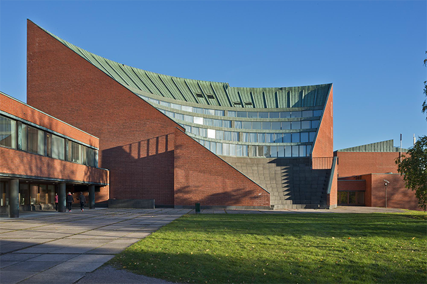
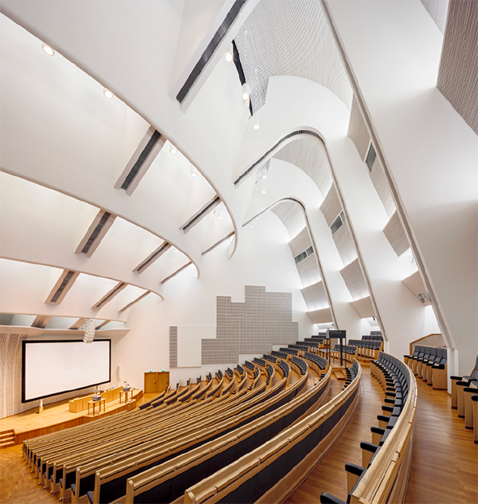
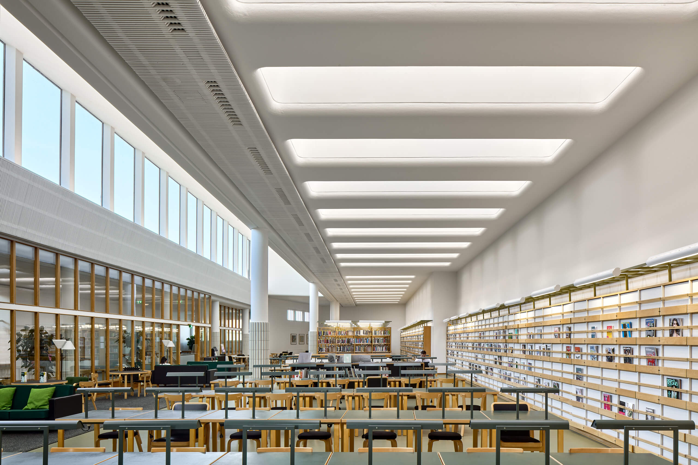
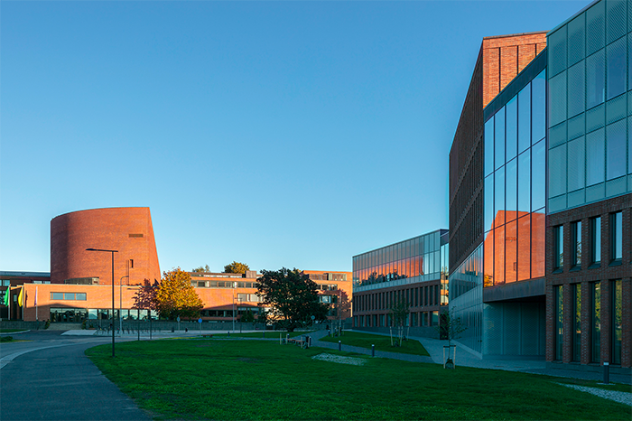
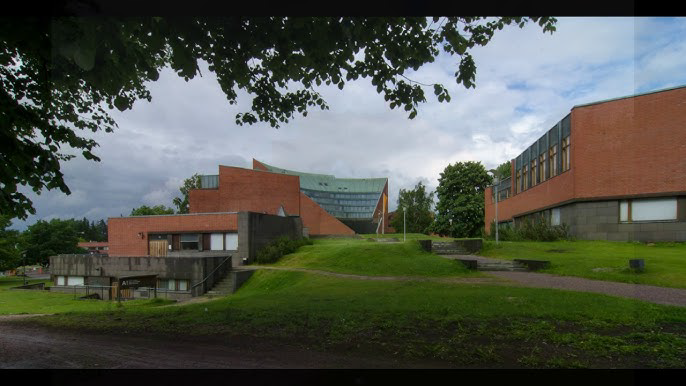
Un campo aperto che cresce senza perdere identità
Il campus di Otaniemi rappresenta uno dei casi più raffinati di progetto “a campo” del Novecento: un sistema insediativo capace di trasformarsi nel tempo mantenendo una coerenza interna riconoscibile. Aalto non definisce una forma-matrice rigida, ma un insieme di direttrici morbide, curvature topografiche e assialità interrotte che operano come struttura generativa, non come griglia prescrittiva. Sin dall’inizio, il progetto si fonda sull’idea che la forma del campus non debba essere fissata, ma resa estensibile, capace di accogliere variazioni e ampliamenti senza perdere la propria identità.
La visione originaria — sviluppata da Alvar e Aino Aalto nel 1949 — nasce in stretta continuità con il paesaggio naturale: la disposizione degli edifici risponde ai boschi esistenti, alle pieghe del terreno, ai viali storici della tenuta. Gli edifici principali, come l’iconico auditorium a ventaglio (1964–1974), non impongono un ordine, ma contribuiscono a un campo relazionale fatto di complementarità e differenze, dove ogni nuovo intervento trova una posizione non per allineamento geometrico, ma per affinità di comportamento con il sistema complessivo.
Il progetto originale riflette inoltre la cultura urbanistica del dopoguerra, privilegiando ampie distanze tra gli edifici e una mobilità fortemente centrata sull’automobile. Tuttavia, questa impostazione non compromette la struttura profonda del campus: la sua logica non è tipologica, ma direzionale. Proprio questa natura “aperta” ha reso possibile, decenni dopo, la trasformazione di Otaniemi in un campus urbano più denso, pedonale, interdisciplinare e sostenibile, senza smarrire il carattere organico del disegno iniziale.
La forza critica dell’opera sta nella capacità di coniugare continuità e trasformazione. Le direttrici stabilite da Aalto non prescrivono la forma, ma definiscono un campo di possibilità entro cui costruire. Gli interventi successivi non imitano la lingua di Aalto: ne riconoscono il sistema di relazioni e lo reinterpretano, rendendo il campus un ecosistema dinamico, capace di evolvere mantenendo intatta la sua identità. Otaniemi dimostra così come un progetto possa essere pensato non come un oggetto concluso, ma come un organismo aperto, un campo evolutivo che armonizza stabilità e mutamento.
B.
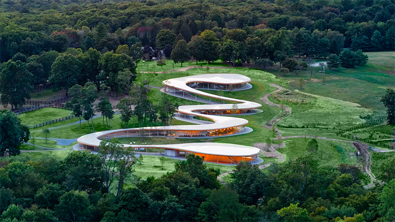
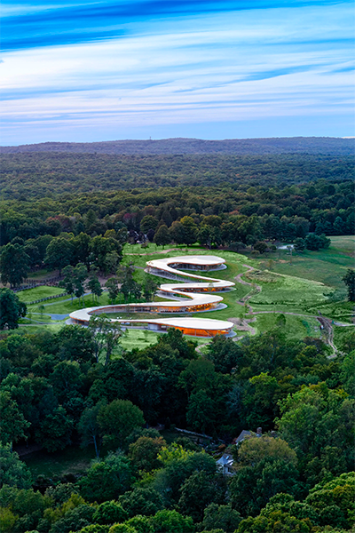
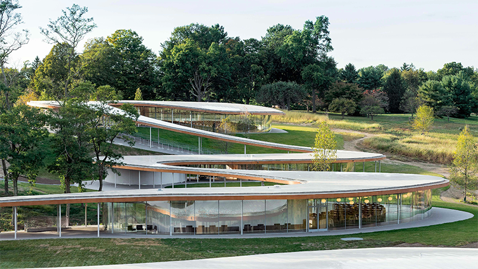
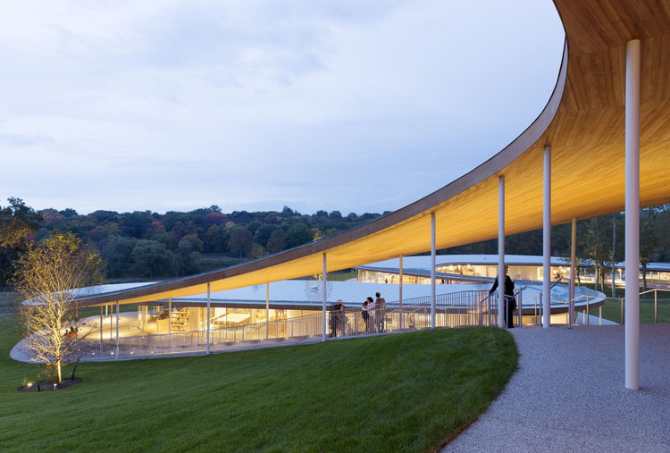
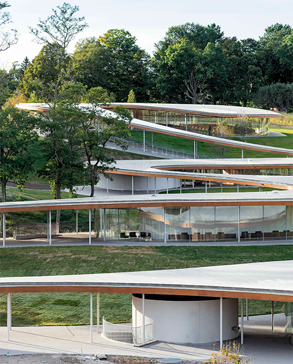
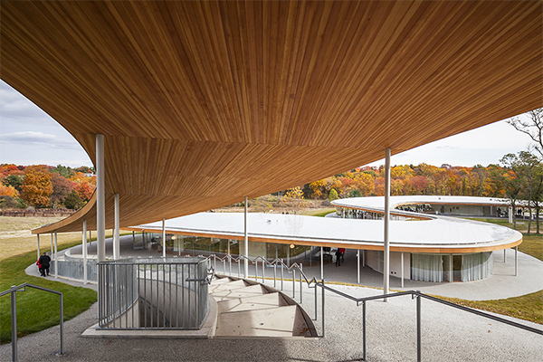
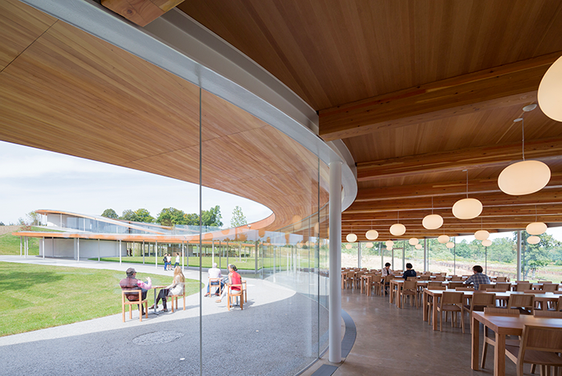
La continuità come struttura: un campo che si deforma senza perdere unità
Il River Building di SANAA è uno dei casi più chiari in cui l’idea di campo spaziale continuo diventa principio generatore dell’architettura. L’edificio non si presenta come un insieme di volumi distinti, ma come una singola superficie ondulata che si distende sul terreno di Grace Farms seguendone le pendenze, rallentando, piegandosi e riemergendo come un nastro leggerissimo. Questa copertura — più paesaggio che tetto — è l’elemento strutturante del progetto: definisce direzioni, quote, relazioni, molto più dei padiglioni chiusi che ospitano le funzioni.
L’architettura nasce dalla volontà di integrare il costruito nel paesaggio senza produrre un oggetto autonomo. La lunga linea serpentina scivola tra prati, boschi e stagni, trasformandosi in un sistema di spazi trasparenti collegati da un’unica figura. Le facciate sono composte da pannelli di vetro curvo a tutta altezza, che eliminano ogni gerarchia tra interno ed esterno: la luce, le stagioni e la topografia diventano parte attiva dell’esperienza. Il tetto, sostenuto da sottili elementi in legno lamellare e rivestito in alluminio, sembra fluttuare a pochi metri dal suolo, accentuando la leggerezza del campo.
Il progetto funziona come una sequenza continua di “stagni programmatici” — anfiteatro, biblioteca, sala comune, palestra, padiglioni minori — inseriti sotto la stessa linea di copertura. Le funzioni non sono separate da volumi indipendenti, ma immerse in un flusso spaziale che le mette in relazione reciproca. Il movimento del visitatore non è mai puramente distributivo: è una esperienza atmosferica, un attraversamento che rende percepibile il legame tra corpo, luce e terreno.
Dal punto di vista disciplinare, il River Building mostra come un campo possa essere deformabile e tuttavia coerente. Le curvature della copertura non generano un’immagine frammentata: al contrario, rendono leggibile l’unità complessiva. SANAA dimostra che la continuità non è un fatto estetico, ma un dispositivo relazionale che permette all’architettura di assorbire differenze — variazioni programmatiche, topografiche e percettive — senza perdere identità.
In questo senso il progetto anticipa un modo di progettare non centrato sulla tipologia, ma su logiche ecologiche e adattive: l’edificio non si sovrappone al paesaggio, ma lo interpreta; non chiude funzioni in contenitori, ma costruisce una rete di relazioni che le tiene insieme; non impone una forma, ma propone un campo evolutivo, un organismo che può crescere e mutare mantenendo la propria coerenza interna.
C.
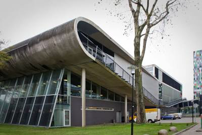
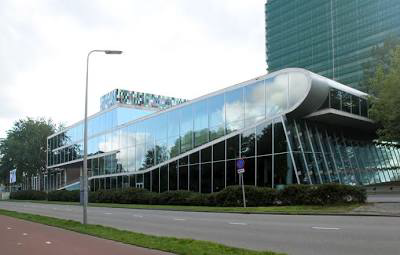
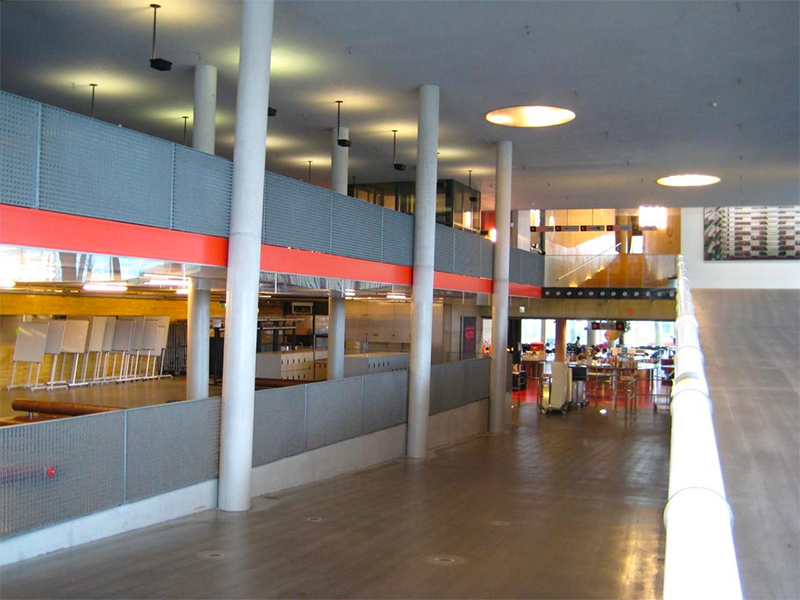
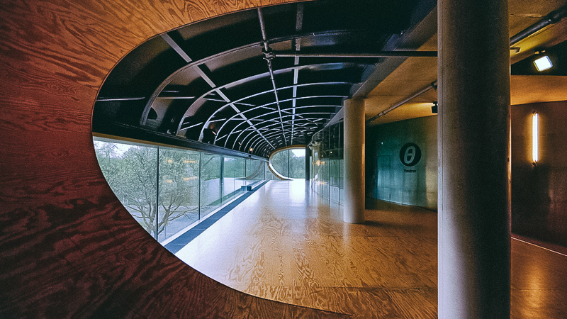
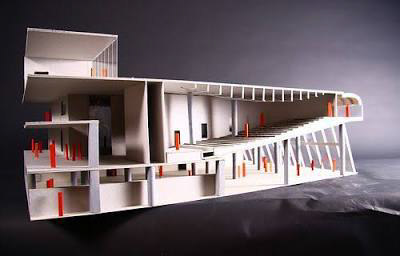
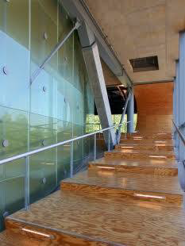
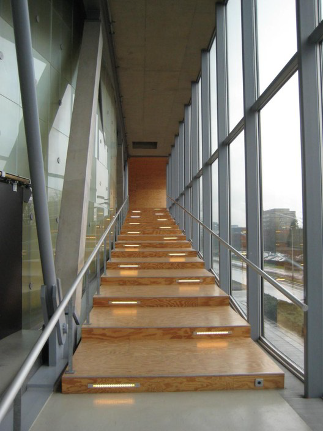
La piega come principio di continuità del campo
L’Educatorium dell’Università di Utrecht rappresenta uno dei momenti più avanzati della ricerca di OMA sulla costruzione dello spazio come paesaggio artificiale, dove la forma non deriva dalla somma di volumi, ma dalla deformazione controllata di superfici continue. L’edificio nasce dall’intersezione di due grandi piani — uno più rigido, l’altro più fluido — che si piegano, scorrono e si sovrappongono generando un campo spaziale unitario. La piega non è un gesto plastico: è il dispositivo che permette alla forma di incorporare percorsi, funzioni e relazioni senza frammentarsi.
I due piani costruiscono un’unica traiettoria che assorbe la totalità dell’esperienza universitaria: dall’ingresso alla socializzazione, dalle aule alla caffetteria, fino alle sale d’esame. Nei punti in cui la superficie sale o si inclina, gli spazi cambiano carattere: un piano diventa parete, una copertura diventa pavimento, un auditorium nasce dalla deformazione del soffitto della caffetteria. La distinzione tradizionale tra elementi architettonici si indebolisce e lascia spazio a una logica di continuità geometrica.
La materialità — cemento, acciaio, vetro — non è utilizzata per definire volumi, ma per dare consistenza alle superfici piegate. L’auditorium principale, ad esempio, è formato da una colata di cemento che riveste una struttura d’acciaio, mantenendo la percezione di un’unica superficie continua. La sala d’esame, con il soffitto a griglia di travi a I, enfatizza invece la precisione e la densità strutturale tipica del linguaggio di OMA. Anche la sostenibilità passiva (raffrescamento notturno, tetti verdi) è integrata nella logica del campo e non aggiunta come tecnologia esterna.
Il valore critico dell’Educatorium risiede nella capacità di mostrare che la complessità programmatica non richiede la moltiplicazione degli oggetti, ma può essere assorbita da un campo deformato, in cui le superfici generano spazi attraverso il loro movimento. Koolhaas non organizza le funzioni per compartimenti, ma le lascia emergere come episodi di una stessa continuità. L’edificio diventa così una figura non tipologica: un’infrastruttura esperienziale in cui muoversi significa attraversare una serie di transizioni spaziali che rivelano la logica interna del progetto.
In questo senso, l’Educatorium è uno dei paradigmi della progettazione “a campo” degli anni Novanta, anticipatore dello smooth space: uno spazio non gerarchico, non suddiviso, nel quale differenze funzionali e percezioni si stratificano senza interrompere l’unità generale. Le pieghe non dividono: articolano. Le inclinazioni non separano: orientano. La continuità non elimina la complessità: la rende leggibile.
D.
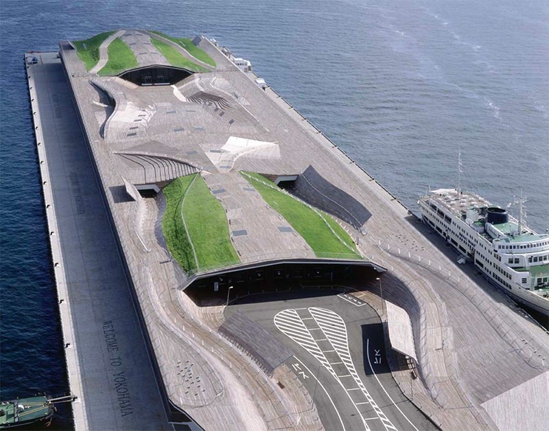
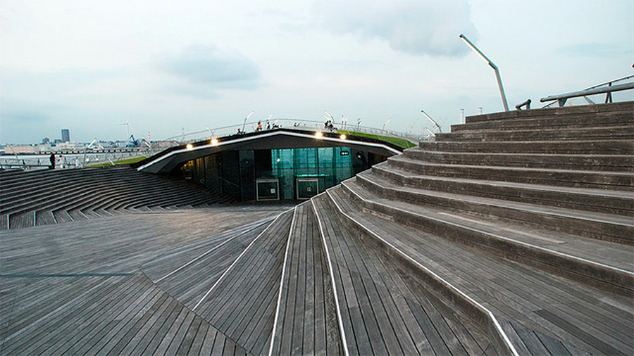
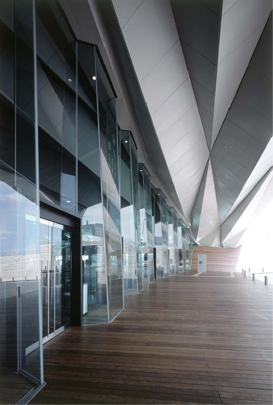
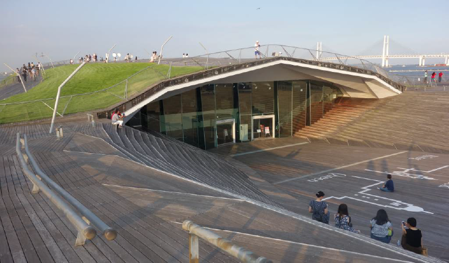
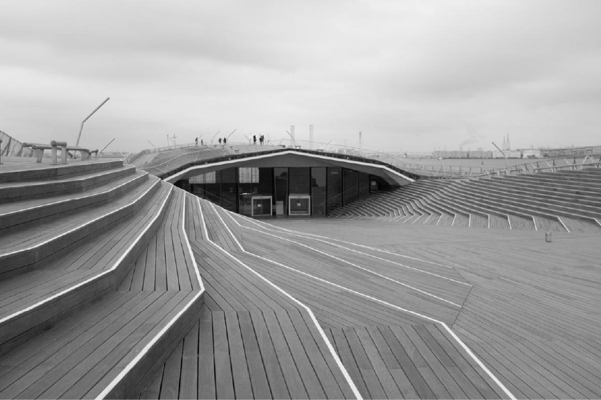
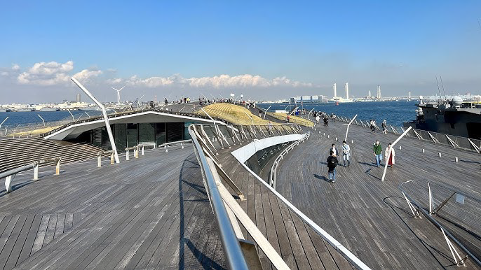
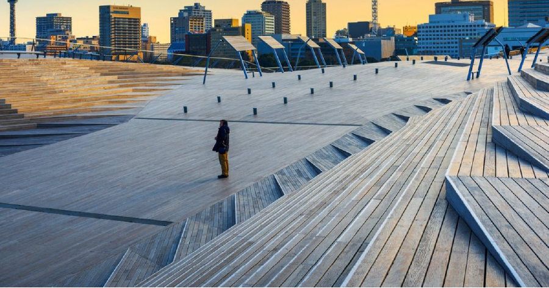
La superficie topologica come campo continuo e trasformabile
Il terminal passeggeri di Yokohama, progettato da FOA, è uno dei casi più emblematici dell’architettura topologica contemporanea: un edificio che non nasce dall’aggregazione di volumi, ma dalla deformazione di un’unica grande superficie continua. Tetto, pavimento e percorso pubblico diventano parti inseparabili di un campo spaziale che si piega, sale, scende e si torce seguendo una logica coerente e leggibile.
L’idea centrale del progetto consiste nel concepire il terminal non come un oggetto architettonico, ma come un paesaggio operativo: un’estensione del molo urbano che si fonde con il porto, il cielo e il movimento dei passeggeri. La copertura praticabile — in legno di Ipe, acciaio e ampie superfici vetrate — si configura come una piazza pubblica ondulata, accessibile 24 ore su 24, da cui osservare la baia e lo skyline di Minato Mirai. La promenade non è un’aggiunta funzionale: è la struttura stessa dell’edificio, e organizza i flussi attraverso curvature dolci, rampe e biforcazioni che eliminano la rigidità lineare tipica dei terminal.
La struttura piegata in acciaio, ispirata all’origami e alle tecniche navali, permette di liberare completamente lo spazio interno da colonne e setti portanti. Questa continuità visiva e funzionale genera un ambiente estremamente flessibile, capace di ospitare attività portuali e, allo stesso tempo, eventi civici e culturali. Lì dove la superficie si deforma, si definiscono zone di attesa, transito o sosta, senza ricorrere a compartimentazioni tradizionali: è la geometria stessa a produrre gerarchie locali.
Le pieghe non hanno un ruolo decorativo, ma comportamentale: orientano i movimenti, regolano i flussi, modulano la luce naturale. Le grandi superfici vetrate e i tagli nella struttura filtrano la luce secondo la curvatura dei piani, generando condizioni atmosferiche mutevoli. Il sistema di circolazione a “anelli intrecciati” evita percorsi obbligati e rende possibile un’esperienza multi-direzionale dello spazio — il celebre “molo senza ritorno”.
Il terminal di Yokohama rappresenta uno dei passaggi fondamentali dal paradigma dell’edificio come composizione di parti a quello dell’ architettura come campo continuo. La superficie topologica sostituisce l’idea di forma chiusa con quella di sistema aperto e trasformabile: un organismo in cui le variazioni locali non rompono la coerenza generale, ma la rendono percepibile. FOA mostra come un’unica struttura possa integrare funzioni complesse, logiche di movimento, qualità atmosferiche e dimensione civica senza frammentare lo spazio.